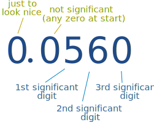

Rounding Numbers
What is "Rounding" ?
Rounding means making a number simpler but keeping its value close to what it was.
The result is less accurate, but easier to use.
Example: 73 rounded to the nearest ten is 70, because 73 is closer to 70 than to 80. But 76 goes up to 80.
Common Method
There are several different methods for rounding. Here we look at the common method, the one used by most people.
First some examples (explanations follow):
How to Round Numbers
- Decide which is the last digit to keep
- Leave it the same if the next digit is less than 5 (this is called rounding down)
- But increase it by 1 if the next digit is 5 or more (this is called rounding up)
Example: Round 74 to the nearest 10
- We want to keep the "7" (it is in the 10s position)
- The next digit is "4" which is less than 5, so no change is needed to "7"
Answer: 70
(74 gets "rounded down")
Example: Round 86 to the nearest 10
- We want to keep the "8"
- The next digit is "6" which is 5 or more, so increase the "8" by 1 to "9"
Answer: 90
(86 gets "rounded up")
So: when the first digit removed is 5 or more, increase the last digit remaining by 1.
Why does 5 go up ?
5 is in the middle ... so we could go up or down. But we need a method that everyone agrees to.
So think about sport: we should have the same number of players on each team, right?
 |
|
And that is the "common" method of rounding. Read about other methods of rounding.
A farmer counted 87 cows in the field, but when he rounded them up he had 90.
Rounding Decimals
First work out which number will be left when we finish.
- Rounding to tenths means to leave one number after the decimal point.
- Rounding to hundredths means to leave two numbers after the decimal point.
- etc.
3.1416 rounded to hundredths is 3.14
as the next digit (1) is less than 5
3.1416 rounded to thousandths is 3.142
as the next digit (6) is more than 5
1.2735 rounded to tenths is 1.3
as the next digit (7) is 5 or more
To round to "so many decimal places" count that many digits from the decimal point:
1.2735 rounded to 3 decimal places is 1.274
as the next digit (5) is 5 or more
Rounding Whole Numbers
We may want to round to tens, hundreds, etc, In this case we replace the removed digits with zero.
134.9 rounded to tens is 130
as the next digit (4) is less than 5
12,690 rounded to thousands is 13,000
as the next digit (6) is 5 or more
15.239 rounded to ones is 15
as the next digit (2) is less than 5
Rounding to Significant Digits
To round to "so many" significant digits, count digits from left to right, and then round off from there.
1.239 rounded to 3 significant digits is 1.24
as the next digit (9) is 5 or more
134.9 rounded to 1 significant digit is 100
as the next digit (3) is less than 5
When there are leading zeros (such as 0.006), don't count them because they are only there to show how small the number is:
0.0165 rounded to 2 significant digits is 0.017
as the next digit (5) is 5 or more

Significant Digit Calculator
(Try increasing or decreasing the number of significant digits. Also try numbers with lots of zeros in front of them like 0.00314, 0.0000314 etc)